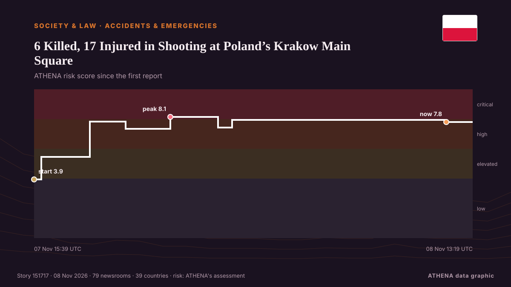

6 Killed, 17 Injured in Shooting at Poland’s Krakow Main Square

KRAKOW, Poland (AP) — A Polish man with far-right views drove into a busy central square in Krakow on Saturday and opened fire, killing six people and injuring 15 others before police shot and… from The Canadian Press (via CityNews)
Reported independently by 79 outlets in 39 countries since 7 Nov, first by The Canadian Press (via CityNews); coverage is fading. ATHENA rates the risk high (7.9/10), driven mainly by the severity of the harm described and its geographic and sector reach. Confidence is 86% (high), with 79 independent outlets corroborating it and an average source reliability of 74%. Outlets by country: Ireland (5), United Kingdom (5), India (3). Coverage: 7 Nov to 7 Nov, 2 hours.
Why it matters: Legal and policy changes alter rights, obligations and public services for the people they reach.
What changed: 130 new reports from 78 outlets in the 24 hours to 8 Nov.
First reported as: Shooting in Polish city of Krakow leaves people dead and injured
How to read this page
- What you are reading
- 79 outlets in 39 countries reported this event. The reports below are listed in the order they appeared; each headline opens the original article. ATHENA writes none of the reports.
- Our reading
- For the record — The reports describe a completed, domestic, commercial or personal matter. We list it so you can see who reported it and when. We are not tracking a risk of wider conflict here.
- How much evidence
- Strong Many independent outlets in many countries describe the same event.
After repeats, off-topic items and stale reports are removed, 34 of the 40 listed reports are counted; 98% of the headlines match the event.
- What this does not mean
- ATHENA measures how an event is reported, not whether it is true. This is not a forecast, a judgement on who is right, or advice.
- What would change it
- Reports from other independent outlets showing a different development, or a firm confirmation or denial from an official source.
Reading R2 · refreshed with every update of this page. ATHENA has not yet published a track record for these readings; when it does, it will be linked here.
At a glance
Selected, scored and written by ATHENA's published methodology. No editor intervenes in individual events. How this is produced ›
| 07 Nov 15:10 UTC | 25 |
|---|---|
| 07 Nov 16:10 UTC | 19 |
| 07 Nov 17:10 UTC | 17 |
| 07 Nov 18:10 UTC | 9 |
| 07 Nov 19:10 UTC | 7 |
| 07 Nov 20:10 UTC | 12 |
| 07 Nov 21:10 UTC | 11 |
| 07 Nov 22:10 UTC | 4 |
| 07 Nov 23:10 UTC | 4 |
| 08 Nov 00:10 UTC | 1 |
| 08 Nov 01:10 UTC | 1 |
| 08 Nov 02:10 UTC | 1 |
| 08 Nov 03:10 UTC | 0 |
| 08 Nov 04:10 UTC | 0 |
| 08 Nov 05:10 UTC | 2 |
| 08 Nov 06:10 UTC | 1 |
| 08 Nov 07:10 UTC | 1 |
| 08 Nov 08:10 UTC | 7 |
| 08 Nov 09:10 UTC | 2 |
| 08 Nov 10:10 UTC | 1 |
| 08 Nov 11:10 UTC | 1 |
| 08 Nov 12:10 UTC | 0 |
| 08 Nov 13:10 UTC | 4 |
| 07 Nov 15:39 UTC | 3.9 |
|---|---|
| 07 Nov 16:00 UTC | 5.5 |
| 07 Nov 18:25 UTC | 7.8 |
| 07 Nov 20:11 UTC | 7.3 |
| 07 Nov 22:23 UTC | 8.1 |
| 08 Nov 00:45 UTC | 7.4 |
| 08 Nov 01:25 UTC | 7.9 |
| 08 Nov 12:01 UTC | 7.8 |
| 08 Nov 13:19 UTC | 7.9 |
Why these numbers
Importance
Risk
Confidence
The reporting — who reported it, and when
headline as published · opens the original- The Canadian Press (via CityNews) · CanadaPolish gunman who killed 6 people in Krakow has ‘ultranationalistic’ views, authorities say
- Times of India · IndiaAt least 6 killed, 15 injured in Poland shooting; gunman shot
- APA (English) · AzerbaijanTwo killed, at least 10 injured in shooting in Polish city of Krakow
- Al Jazeera English · QatarAt least five people killed in shooting in Poland’s Krakow
- France 24 English · FranceGunman who killed at least six in Krakow ‘fascinated’ by far-right ideologies, government says
- RTÉ News · IrelandGunman 'fascinated by far-right' kills six in Krakow
- Anadolu Agency (English) · TurkeyShooting near tourist hotspot in Poland's Krakow leaves 5 dead, 12 injured
- Cyprus Mail · CyprusFive killed in shooting in main square of Polish city of Krakow
- Belfast Telegraph · United KingdomSuspect in Krakow shooting that killed six ‘fascinated with far-right views’
- DW English · GermanyAt least 6 killed in shooting in Polish city of Krakow, police say
- Indian Express · IndiaHorror in Krakow: Gunman opens fire in busy tourist square, 6 killed
- Notes from Poland · PolandSix killed in terrorist shooting in Polish city of Kraków
- Asharq Al-Awsat (English) · Saudi Arabia5 People Were Killed, More than a Dozen Injured in Krakow Shooting
- The Straits Times · SingaporeFive people dead after shooting in Polish city of Krakow
- The Straits Times · SingaporeGunman ‘fascinated by far-right’ kills six in Krakow, Poland
- TASS (English) · RussiaDeath toll in Krakow shooting rises to five — police
- Arab News · Saudi ArabiaPolish gunman kills four women and two men in Krakow’s main square
- CBC News · CanadaPolish police say gunman kills 6 in 'act of terror'; 3 more dead found at suspect's home
- Irish Mirror · IrelandFive killed in Krakow Poland shooting as gunman opens fire in Market Square
- NBC News (World) · United StatesGunman kills 6 in ‘terror attack’ in Poland, officials say; 3 others found dead in his home
- Gulf News · United Arab EmiratesSix killed in mass shooting in Poland's Krakow
- Deccan Herald · IndiaSix dead, 15 injured after shooting Poland's Krakow; gunman shot by police
- Haaretz (English) · IsraelShooter kills six, wounds 15 in main square in Poland's Krakow, police say
- Al Jazeera English · QatarFive killed and at least 10 injured in Krakow shooting
- New Straits Times · MalaysiaFive killed in shooting in main square of Polish city of Krakow
- Manchester Evening News · United KingdomKrakow shooting: 5 dead and dozens injured as gunman opens fire in Poland's Main Square
- The Guardian · United KingdomKraków shooting latest updates: six killed and more than a dozen injured – as it happened
- Irish Examiner · IrelandSix killed and at least 15 injured after gunman opens fire in Krakow
- TheJournal.ie · IrelandSix people dead and fifteen wounded in Kraków shooting
- The Age · AustraliaSix killed after gunman opens fire on tourist hotspot in Krakow
- RTÉ News · IrelandAs it happened: Six dead in Krakow 'terror attack'
- Ukrainska Pravda (English) · UkraineZelenskyy condemns Kraków shooting as shocking crime
- The Irish News (Belfast) · United KingdomFive people killed and more than a dozen injured in Krakow shooting
- TRT World · TurkeyDeadly shooting hits Poland's Krakow
- ABC News Australia · AustraliaKrakow shooter who killed at least six had 'far-right' views, minister says
- The Independent · United KingdomKrakow shooting that left six dead is ‘a terrorist offence’, says Polish prosecutor
- Khaleej Times (working feed) · United Arab EmiratesPoland says five killed in shooting in central Krakow
- China Daily — page reader · ChinaShooting in Poland's Krakow leaves people dead, injured
- The New York Times (World) · United StatesAt Least 6 Dead in Poland After Gunman Opens Fire in Krakow, Police Say
- Euractiv · BelgiumGunman ‘fascinated by far-right’ kills six in Krakow, Poland